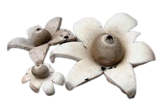
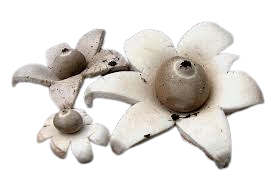

Descripción morfológica
Geastrum triplex, conocido como "estrella de tierra triple", es un hongo gasteromicete de la familia Geastraceae. Su cuerpo fructífero pasa por una transformación espectacular: inicialmente globoso y subterráneo, al madurar se abre en forma de estrella con 4-7 brazos triangulares (exoperidio), revelando un esporocarpo central (endoperidio) con un ostiolo apical para liberar esporas. Los brazos se curvan hacia atrás, dando un aspecto escultórico.
Detalles anatómicos
- Exoperidio: Capa externa carnosa que se divide en lóbulos estrellados, de color beige a marrón oscuro, con superficie fibrosa.
- Endoperidio: Esfera central grisácea o marrón pálido (1-3 cm de diámetro), con un "cuello" (peristoma) surcado que rodea el ostiolo.
- Esporas: Esféricas, verrugosas, de 3.5-5 µm, liberadas como polvo marrón cuando el hongo es golpeado por gotas de lluvia.
- Himenio: Ubicado dentro del endoperidio, donde se producen las esporas.
Distribución y hábitat
Especie cosmopolita, presente en Europa, América, Asia, África y Oceanía. Prefiere bosques caducifolios y mixtos con suelos ricos en humus, especialmente bajo hayas (Fagus), robles (Quercus) o encinas. También aparece en jardines antiguos y bordes de caminos forestales. Fructifica en otoño, a veces en grupos numerosos.
Hábitats específicos
- Bosques maduros: Requiere hojarasca abundante y descomposición lenta.
- Suelos calcáreos: Frecuente en zonas con pH neutro a alcalino.
- Microclimas húmedos: Aunque resistente, necesita humedad estacional para desarrollarse.
Ciclo de vida y reproducción
Hongo saprótrofo que descompone materia orgánica muerta. Su ciclo comienza con esporas que germinan en micelio subterráneo. Tras lluvias otoñales, forma un "huevo" basal que emerge a la superficie. Al madurar, el exoperidio se rasga en forma de estrella, elevando el endoperidio para facilitar la dispersión de esporas por el viento (anemocoria). Las esporas pueden permanecer viables durante años.
Etapas clave
- Fase subterránea: El joven esporocarpo es blanco y globoso, similar a un pequeño puffball.
- Dehiscencia: Los brazos del exoperidio se abren en respuesta a cambios de humedad.
- Dispersión: Las gotas de lluvia golpean el endoperidio, liberando nubes de esporas ("efecto chimenea").
Usos principales
- üå± Ecol√≥gico: Acelera la descomposici√≥n de hojarasca, reciclando nutrientes como nitr√≥geno y f√≥sforo.
- üé® Cultural: Usado en arte naturalista por su forma escult√≥rica; inspiraci√≥n para dise√±os en cerámica y joyer√≠a.
- üî¨ Cient√≠fico: Modelo para estudios de hidromecánica en dispersi√≥n de esporas y adaptaciones a cambios higrom√©tricos.
- üèûÔ∏è Tur√≠stico: Atractivo en micoturismo por su fotogenia y facilidad para identificar.
Curiosidades y datos adicionales
- Mecanismo de dispersión: Las gotas de lluvia al impactar crean un vórtice que succiona esporas hacia arriba.
- Longevidad: Los "brazos" estrellados pueden persistir intactos durante meses.
- Nombre científico: Triplex hace referencia a sus tres capas distintivas (exoperidio, endoperidio y capa pseudoparenquimatosa).
- Relación con humanos: Tribus nativas americanas lo usaban como yesca por su inflamabilidad al secarse.
Precauciones y conservación
No es comestible pero tampoco tóxico. Para proteger sus poblaciones:
- Evitar recolectar ejemplares completos; fotografiar en su hábitat.
- Preservar bosques maduros con hojarasca intacta, su ecosistema crítico.
- No pisar zonas donde fructifiquen, el micelio es sensible a compactación.
Diferencias con especies similares
| Especie | Diferencias clave |
|---|---|
| Geastrum fornicatum | Endoperidio sin "cuello" y brazos que tocan el suelo (efecto arco). |
| Geastrum sessile | Exoperidio no se separa completamente del endoperidio. |
| Geastrum coronatum | Peristoma (abertura) franjado como una corona. |